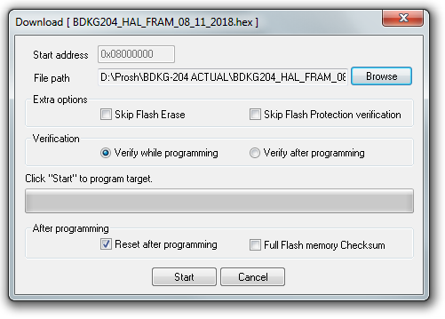
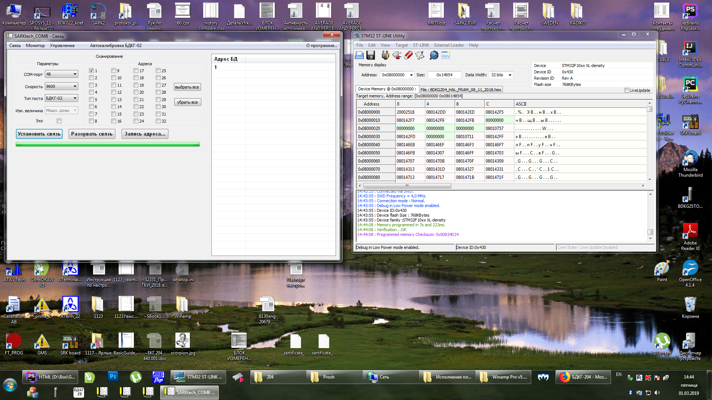

Подключить питание через ODU разъем → USB-COM адаптер. (На этапе прошивки — как питание, на этапе проверки работы — как обмен, потребление рабочее блока ~75 мА).
Подключить программатор
Подключение
При подключении обращать внимание на расположение 1-ого вывода как при подключении к переходнику, так и при
подключении к плате обработки БД:
ПереходникПлата обработки БД
Запустить STM32-LINK
Target → Connect
Target → Program & Verify

Выбрать прошивку (кнопка "Browse")
Есть два типа прошивки, для старых приборов с памятью DATA-FLASH, и для новых, с памятью FRAM.
Если прошить не той прошивкой, прибор не подключится
Нажать "Start"
Если появляется окно с ошибкой: "Can not read memory!"
Если появляется такое окно с ошибкой:
Это значит, что устройство уже прошито, и прочитать или перезаписать прошивку нельзя. Чтобы убрать
защиту, необходимо сделать следующее (Внимание! Существующая прошивка будет стёрта!):
Target → Option Bytes
Readout Protection ⇒ Disabled
Flash Section Protection ⇒ Unselect All
Apply
Защита снята, прошивка стерта
Проверить корректность прошивки можно подключив устройство к SARKtech, тип устройства — БДКГ-02 (перед
подключением обязательно отсоединить, подключить ODU разъём):
После проверки наклеить на плату наклейку с версией прошивки:
Удобнее всего прошивать следующим образом: открыть одновременно и STM32-Link и SARKtech и разместить оба
окна рядом. Прошить в STM, отключить-включить питание блока и сразу проверить в SARK, подключить
другой блок и т. д. Окна не закрывать.
